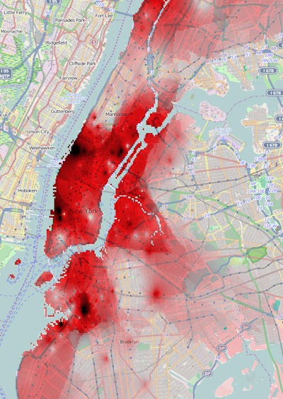

Every Christmas Tree in Eyes Wide Shut
by Orgotheonemancult x Stanley Kubrick
How Much Did You Pay For Your Christmas Tree?
by The Brian Lehrer Show
WNYC
Tree Sales Branching Out
by Rachael Jarosh and Tracy Motz
Wall Street Journal, December 24, 2012
If there is a Number One New York pastime, it is certainly coveting thy neighbor. If there is a Number Two New York pastime, it may be hauling low-stakes goods around the city. Thankfully, between company and home holiday parties, bonuses, and travel, Christmas ensures many New Yorkers are without want for their ritual. When it comes to Christmas trees, these two pastimes come together hand-in-hand.
When I moved to New York, I arrived to a mattress on the floor but otherwise bare apartment. For months, a plain 8-foot Christmas tree was the sole furnishing, and when it was removed, I was back to mattress minimalism. Then, just as now, seeing Christmas trees in brownstone windows and sold on curbs elicits questions about New York and its residents. Where are the most expensive trees? How variable is tree pricing, and how does it change as you move through the city? Who are buying trees, the religious or the agnostic? Who are the hidden population of tree sellers? Do SoHo loft-owners buy mongo trees for their mongo lofts?
Using Christmas tree purchasing data crowdsourced by The Brian Lehrer Show of WNYC, I was able to look into the question of spatial pricing. There are definite methodological concerns with using this dataset. No effort is made to weigh responses to relieve any sampling bias. Nonetheless, I don't believe the concerns are too great, given reasonable spatial coverage. The vast majority of responses came from Manhattan or Brooklyn; Staten Island is completely unrepresented. Of the 225 total responses, 109 were from Brooklyn, 85 from Manhattan, 26 from Queens, and 5 from the Bronx. Because of the few responses for Queens and the Bronx, I pooled their responses when comparing boroughs.
Here's a plot of what people spent on trees.
What people are paying, irrespective of height, broken down by borough
If we crudely normalize the price by the height of the tree, we can estimate what people would have paid for a 6-foot tree.
Roughly what people would pay for a 6-foot tree
Looking at these distributions, it's difficult to say with confidence if the distributions vary at all. However, there is a statistical test, called the Kolmogorov-Smirnov Test (K-S Test), that can be used to compare samples from two distributions to see if they are drawn from the same distribution. For example, that means that we can see if the distribution of tree purchase prices differs between boroughs.
The K-S Test says the distribution of actual purchases is indistinguishable between boroughs. However, there is weak evidence that, when normalizing for height of the tree, distributions between boroughs differ. If we plot height against price, we do see some correlation; as height goes up, so does price, but so does the variance or spread. If anyone is interested in Christmas tree arbitrage--go big.
Height against Price. A little noise was added to each observation so multiple observations on the same coordinate wouldn't obscure each other in the visualization.
A simple linear model says that a tree in Manhattan costs $14.05 more than one in Queens or the Bronx. One in Brooklyn will cost you $10.53 more. Independently, each additional foot of tree will cost on average $8.75.
This model isn't terrible; each variable is statistically significant, and it accounts for 31% of the variation between tree prices, but what about the remaining 69%? If we suppose that prices are spatially smooth, meaning, they don't radically jump in price from block to block, it is most likely that this remaining 69% is accounted for by intra-borough variation. That is, pricing within a borough is much more variable than pricing between boroughs.
To verify this, I made the map above from the same WNYC dataset. For me, this map tells two stories. Firstly, even Christmas trees are not immune to gentrification--if you want any hope of having pocket change to decorate your tree, stay away from the Village. Secondly, intra-borough variation is enormous. It makes no sense to talk about boroughs as a whole without first talking about the neighborhood. The variation inside boroughs is just too large--a tree in Park Slope could cost you nearly twice as much on the other side of the park in Crown Heights! At least with Christmas tree prices, the West Village and Soho have more in common with Greenpoint, Carroll Gardens, and Fort Greene than they do with Harlem, Bed-Stuy, or Coney Island--the distinction is neighborhood first, borough second.
All of this speaks to a larger point. Pace Zadie Smith, you neither will find your beach nor your tree in a certain New York borough. But in a certain New York neighborhood--perhaps.